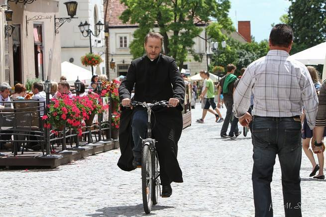
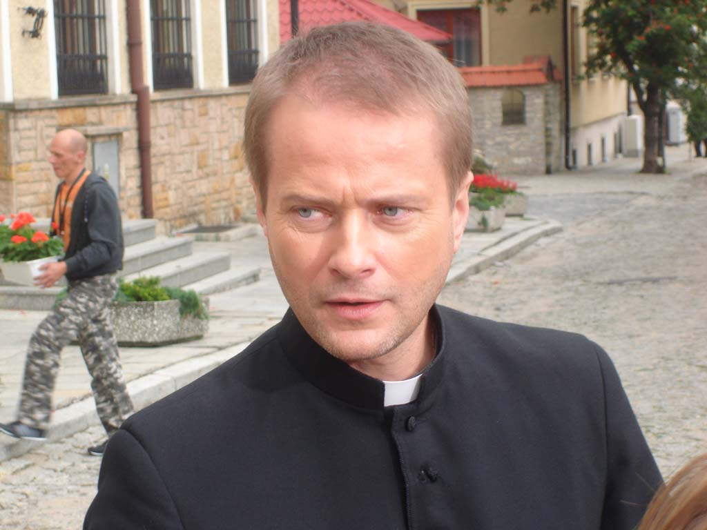

ks. Mateusz Żmigrodzki (Artur Żmijewski) – ksiądz katolicki. Po latach pracy na Białorusi wraca do Polski i obejmuje posadę proboszcza parafii w Sandomierzu. Posiada talent do rozwiązywania zagadek kryminalnych, co sprawia, że często angażuje się w ich wyjaśnianie. Jest niezwykle błyskotliwy, inteligentny i spostrzegawczy. Zawsze chętnie pomaga ludziom.

Wygląd
Ksiądz Mateusz jest wysoki i szczupły. Ma styl indie. Ma ciemne blond włosy i niebieskie oczy. Zazwyczaj ma na sobie sutannę.W zdecydowanej większości odcinków ma też zarost.
Osobowość
Jest znany ze swojej chęci do pomagania każdemu, kogo spotka, oraz talentu do rozwiązywania zagadek kryminalnych. Najbardziej lubi grać w szachy i jeździć na swoim rowerze. Gotów wiele poświęcić, aby osiągnąć swoje cele. Bardzo lubiany przez mieszkańców Sandomierza
Wzrost
196cm
Ulubiona gra
Szachy

Ciekawostki
Ksiądz Mateusz bardzo rzadko porusza się samochodem. Zdecydowanie częściej widzimy go w serialu jeżdżącego swoim rowerem.
Mateusz bardzo lubi grać w szachy - zwłaszcza z asp.Dziubakiem asp.szt.Noculem.
Ks. Mateusz nie słodzi kawy.
W drugim odcinku w 23 minucie widzimy stary rower Ojca Mateusza. Półtora minuty później jedzie już na nowym rowerze do komendy. Wracając ma swój stary rower.
Kościół, w którym ksiądz Żmigrodzki jest proboszczem, tak naprawdę znajduje się w Warszawie, nie w Sandomierzu.